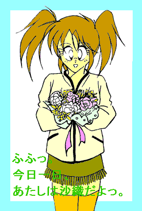
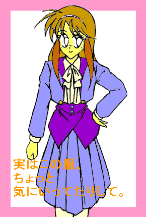
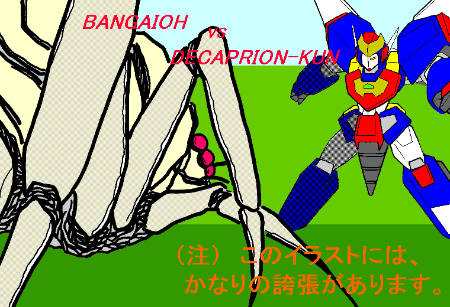

——萌え燃えっ！ 白塁学園高校女子ロボＴＲＹ部 ＥＸ２——
なりきり美少女お見合い騒動っ
ＣＲＥＡＴＥＤ ＢＹ ＭＯＮＤＯ
「……甲介、あんた何ぼーとしてんのよ？」
腐れ縁のガールフレンド（？）にそう声をかけられ、飯綱甲介はふと我に返った。
めっきり日暮れの早くなった秋の夕方、学校からのいつもの帰り道のことである。
「あ…………ち、ちょっとな」
「ふうん……」
そのまま肩を並べ、ふたりは夕暮れ色に染まったバス通りを歩き続ける。
「ねえ、ひょっとしたらおばさまの誕生日プレゼントのこと？」
「あ…………ああ、まあね……」
相変わらずカンの鋭さを発揮する幼なじみに、甲介は苦笑しながら答えた。
そう、明日は彼の母親の、ン十回目の誕生日なのである。
「なあ、ほのかなら誕生日のプレゼントって……何欲しい？」
「う〜んとそうね〜っ。《キャロット》
の新しいソール（足底用ラバープロテクター）も欲しいし、最新型の膝関節アシストモーターとか、動作ＯＳとＧセンサーのバージョンアップ版なんかもいいわねえ…………」
「お、おい……っ、ほのかっ」 「冗談よっ」
自分の欲しいものを臆面もなく羅列する彼女を半眼で見つめ、口調は本気だったぞ——と思う甲介。
だが、このロボＴＲＹ娘にそんなこと尋ねる行為自体間違っているのかもしれない。
白塁学園高校女子ロボＴＲＹ（ロボット・トライアスロン）部部長、藤原ほのか。
《キャロット》 というのは、彼女の所有するメガパペット（競技用有線遠隔操作式人型有脚マニピュレーター）の愛称である。
そして甲介自身も、《マシンノート》
と名付けた機体を駆るメガパペット・プレイヤーなのだ。
「全く、高校生にもなって自分の母親の誕生日プレゼントで真剣に悩むなんて。……だからマザコン呼ばわりされるのよっ」
「大きなお世話だっ」
言っておくが、甲介を『マザコン』
呼ばわりするのはほのかだけだ。
しかし、父親亡きあと女手ひとつで自分を育ててきて、最近では甲介／沙織の一人二役を影で支えてくれている（これについては甲介自身、色々と含むものがあるのだが）母親に、日頃の感謝の気持ちを表したいと思うことは、少なくとも悪いことではない。
そう、彼——飯綱甲介が謎の美少女文月沙織に
“変身” できることを知る者は、今のところこの母親と彼のお師匠だけなのである。
胸は豊かに膨らみ、身体は柔らかく丸みを帯び、男のモノは消失して女性のそれに置き変わる。未知のナノマシンによるＤＮＡレベルでの変身で、意識は甲介のまま身体は完全に別の人間（女の子）になることができるのだ。
で、その姿の時の名前が、『文月沙織』。
『文月』 というのは母方の旧姓、『沙織』
は「娘が生まれていたらつけようと」 母親が考えていた名前である。
なお、隣にいるほのかは、いまだに甲介と沙織が同一人物であることに気付いていない。
それはさておき……
「直接本人にきけばいいじゃない」
「きいたよ。『今度の誕生日に何欲しい？』
って」
「で、なんて言われたの？」
「ダイヤの指輪か豪邸か、『私に合った自動車保険』
だとさ」
「…………あははははっ。おばさまらしい」
「あのなあ……」
憮然とした表情を浮かべ、甲介は鼻の頭をかいた。
「じゃあさ、無難なところでお花なんか、どう？」
と、ほのか。
「花かあ。けど、それだけじゃな……」
「そ〜ねえ。何か気のきいた小物でもつけた方がいいわよねえ」
ぶっちゃけた話、今回の誕生日プレゼントは、変身の秘密を面白がる母親を牽制する意味もある。
もちろん、誕生日を祝ってもらったくらいで、あの母親がおとなしくしてるはずなどない。しかし、お師匠にまで秘密がバレている今の時点では、こういうことにはできるだけ早急に対処（笑）しておく必要がある。
何がきっかけでほのかに秘密気付かれるか、分かったもんじゃないからな……と、眉間にしわを寄せる甲介。
だが——
「あ、あのさ、…………じ、実をいうと今月、《マシンノート》
のオーバーホールして金欠気味なんだよお〜」
いきなり哀願口調で訴える甲介。「……で、でさ、ほのかあ——」
「いっ、言っとくけどあたしをあてにしないでよねっ」
先手を打って釘を刺すほのか。どうやら彼女も手元不如意であるらしい。「——でも、なんでまた急にオーバーホールなんかしたの？ こんな時に」
「え〜っと、まあ、その……いろいろありまして…………」
何故か言葉をにごす甲介。とあるパーティでの悪夢（笑）がその脳裏をよぎる。
いぶかるほのかの視線を気にしつつ、甲介は肩をすくめた。「う〜っ、しっかしまぢでほんと何かないかな〜っ。元手がかからず喜んでもらえるもの…………しかしいまどき
『お手伝い券』 なんてもないしなあ」
「何おバカなこと口走ってんのよ……」
「う〜ん…………」
机の上に置かれた小さな花束を見つめ、甲介は何度目かのため息をついた。
そろそろ日付が明日になろうかという時刻である。
「——どうしたもんかな〜っ」
ていねいにラッピングされ、リボンをかけられたその花束は、ほのかに見立ててもらったものだ。
しかし、結局それを買うだけで、甲介の所持金は完全に底をついてしまったのであった。
「やっぱ花だけじゃあ、ちょっとたよりないかなあ…………」
腕組みしながらそうつぶやく。正直言ってここ数年、母親にちゃんとした誕生日プレゼントを贈った記憶がない。
たいてい一週間ほど過ぎた頃に気がついて、あわてて料理や手芸の雑誌（すでに本棚の肥やしになっている）だとか、携帯キーチェーンゲーム（結局プレゼントした当人が一番遊んでいる）なんかでうやむやにしてきたのだ。
で、今年こそはきちっとしたものをっ、と思ってはみたものの——
「だああああっっ。なんで今月に限ってこんなに出費が多いんだ〜っ！」
思わず頭をかかえてしまう甲介。……と、自分の右手首が目にとまる。
「あ、そうだっ。……………………で、でも……ち、ちょっと本末転倒かも…………」
逡巡すること数分間。甲介は部屋の扉をほんの少し開け、まわりをそーっとうかがった。階下からは、母親が風呂に入っている音がかすかに聞こえてくる。
「……よ、よしっ」
気合（？）を入れて、甲介は廊下に出ると階段の上がり口にある姿見の前に立った。
鏡には、Ｔシャツに綿パン姿の自分が映っている。何故か顔が赤い。
「…………」
片目を閉じてわざとらしい咳払いをし、甲介は右手を伸ばして手首に意識を集中した。
正確には右手首にはまった銀色の腕輪に。それがかすかな金属音をたてて収縮、皮膚に密着する。
「んっ！ くう……っ」
次の瞬間、そこから全身にしびれが広がっていく。甲介は思わず目を閉じ、背筋を伸ばした。
体内にインプラントされたナノマシンが活動を開始したのだ。
「……く、んっ、……んあっ…………」
ぐぐっ——と目に見えて背が縮んだ。
まるで甲介自身の身体が粘土と化し、目に見えぬ手によってつくり直されていくかの如く変化していく。
恐るべきスピードで、細胞ひとつひとつのＤＮＡマトリクスが書き換えられていった。
その新たな情報に基づいて、細胞の配列があっという間に組み直されていった。
同時に休眠中の器官が再活動を始め、逆に不必要な器官は瞬時に退化し、消滅していった。
……………………………………………………………………………………
……………………………………………………………………………………
「…………………………………………ふうっ」
そして、身体からしびれが、すっと退いていった。
大きく息を吐き、ゆっくりと目を開く。だが、目の前の姿見に
“甲介” の姿は映ってなかった。
鏡の中からは、さっきまで彼が着ていた服を身にまとった可愛らしい少女が見返してきた。
腰近くまである長くしなやかな髪、ぱっちりした目、細い眉、柔らかな頬のライン、小ぶりでキュートな顔だち。
少年から少女に。
♂から♀に。
甲介から “沙織” に——
「ぬっふふっ。へ・ん・し・ん完了……っ♪」
…………こらこらっ、口元に指当ててポーズなんかとるんじゃないっ。

「おっはようっ、…………ま、ママっ！」
「えっ!? さ……沙織ちゃん？？」
思わず朝食を作る手を止め、白のカットソーにフリンジスカートといった姿でキッチンに下りてきた
“娘” を、母親はまじまじと見つめた。
「ど…………ど〜したの、いったい？」
「ふふ……っ」
驚く母親にいたずらっぽく微笑むと、沙織は後ろ手に持っていた小さな花束を両手で差し出した。
「はいっ。ハッピーバースディ、ママっ」
「へ!? あ…………あ、ありがと…………沙織ちゃん……」
目をぱちくりさせてエプロンで手をぬぐい、プレゼントを受け取る母。「で……でも本当にどうしたの？ すっかり女の子になっちゃって……」
いつもなら、せかされないと変身しないのに…………。
「う…………うん、あ、あのね——」
おっかなびっくり尋ねてくる母親に、沙織（甲介）はアップテールにした髪の毛の先を指でもてあそびながら、しばし口ごもった。
「実は、ね……」 と、顔を赤らめ、「え〜っと、その、ママの誕生日の今日一日、プレゼントっていうこと——で、……あ、あ〜あたし、そ、その…………お、女の子に、な、なりきることにしたの」
鈴を鳴らしたような可愛らしい声でそう言って、フリンジの裾をぎこちなくつまんで首をかしげる。同時に母親の目が点になった。
「…………」
「あ……き、今日だけだっ！ …………じゃなくて今日だけよっ。今日だ・けっ」
あわててそうつけ加えると、沙織は照れくさそうに母親の顔をのぞき込んだ。「…………やっぱ、変、か……な？」
そんな彼女に母はくすっと笑みを浮かべ、その鼻先を人差し指で軽くつっついた。
「……そんなことないわよ、さ・お・り・ちゃん」
そして、愛娘（？）の身体を優しく引き寄せると、その耳元でそっとささやいた。「ありがと。……とっても素敵なプレゼントよ」
「あっ、え、え〜っと、そ、その……………………ま、ママ……」
いきなり抱きしめられ、もじもじとはにかむ沙織。しかし内心してやったり——とほくそえむ沙織の中の甲介。
よっしゃあああっ！ これでちゃちなプレゼントをうやむやにできるっ。おまけに一日
“女の子” でつきあえば、後日ツッこまれても開き直れるっ！ お金も全然かかんないし、ま・さ・に発想の転換＆一石二鳥〜っ……といったセコい考えはおくびにも出さずに、沙織は身を離すと母親に向かって可愛らしくウインクしてみせた。
念のため言っておくが、このような暴挙（笑）に出たのには、「元に（男に）戻ることができる」
という前提があるからに他ならない。
しかし……
「と、いうことで今日一日よろしくねっ♪ ママっ」
「くすっ。…………じゃあ、朝ごはん作るの手伝ってくれる？」
「うんっ。あたしにまかせてっ」
なんだかんだいいつつも、結構ノリノリな沙織（甲介）であった。
……だからそういうことするから、「少しずつ少女化が進行している」
なんて評されるのだ。
甘かった…………。
「ねえ、これなんかどうかしら？ 沙織ちゃん」
「う〜んっ、あたしにはちょっと大人っぽいんじゃないかな〜っ。さっき試着した方が……………………って、
はっ！ な……なんでこんなことやってるんだオレはっ」
「こらっ、『オレ』
じゃないでしょっ。自分から女の子宣言しておいてっ」
思わず素に戻った沙織に、母は両手を腰に当てて口をとがらせた。
駅前通りに面したショッピングモール、その八階にあるレディースファッションフロア。平日の昼間ということで客の入りはそれほどではないが、それでも学生やフリーターらしき若い女性があたりを行き交っている。
「…………」
姿見の前で冬物のジャケットを胸元に当てたまま、あはあはと引きつった笑い声を上げる沙織。そして、嬉々として次の洋服を物色する母親に、結局いつもやってることと変わんないじゃねーか——といった視線を向けた。
まあ、「一日女の子になりきる」
と言った手前、買い物くらい付き合うのも
“プレゼント” のうちかな……と、なりきりモードでついて来たまではよかったのだが、
——ううっ、ま……また状況に流されてしまったっ。
るんるん気分で服選びを楽しんでいる自分に気付き、沙織はその顔をメルトダウン寸前まで赤面させる。
毎度毎度のことではあるが、例によってドツボにずぶずぶはまっていくのを自覚する。しかも今回は、自分で種まいたようなものだから嘆くに嘆けない。
しかもそれ以前に、「ママね、一度こうやって女の子のあなたとショッピングしてみたかったのよ〜」
などとしみじみ言われたりしたら、沙織——いや甲介に拒否できるわけがない。
さっきから何回鏡の前に立っているのだろう……。ああ、店員さんがこっち向いてにらんでるっ。
「うううっ…………けど、少なくとも今のオレ、じゃなくてあたしは胸もおしりも膨らんでるし、髪の毛長くなってるし、顔も声も変わってるし、ショーツ履いてブラ着けて見た目も身体の中も完全に女の子なんだから、“女の子”
してたってそれが少なくとも傍目には自然なことなわけで……………………ああっ、なんとなくこじつけっぽいというか、強引というか拡大解釈というか屁理屈っぽいぞっ」
とにかく、そう思うことで無理矢理自分を納得させる（？）沙織であった。
「——あ、それじゃあこのチェックのならどう？ こっちのプリーツと合わせたら制服ぽくってすっきりしてると思うけど…………。うん、いいんじゃないっ」
手にしたもうひとつのジャケットを沙織の身体に合わせ、満足げにうなずく母親。
だあああ勘弁してくれえええっ…………と、心の中で悲鳴を上げる沙織の中の甲介。「あ……あのさ、うちも確か洋服屋——」
だが、母はニコニコと笑みを浮かべながらも、有無を言わさず彼女を三たび試着室に放り込むのであった。
ショッピングから帰ってくると、母親はさっそく買ってきた服を沙織に合わせ始めた。
「う〜ん、さすがあたしの娘。何着せてもばっちり似合うわね〜っ。…………そうだっ、この際だからお化粧も教えてあげよっか？」
「げっ！ じゃなくて、い……いやその、そ、そこまでは…………」
「そおっ？ でもまあいいわ。あんまりあれこれ急ぎ過ぎるとあとの楽しみがなくなっちゃうしね」
じりじりとあとずさり始めた沙織（甲介）の様子を見て取ったのか、母親は意味深な笑みを浮かべてとりあえずは引き下がる。「——じゃあ、今度はこっちのスカートとベスト合わせてみて、沙織ちゃん」
「うっ、……う、うん」
顔をますます赤らめながらも精一杯なりきってつきあう沙織（甲介）であったが、その時、店の方から来客を伝えるチャイムの音が聞こえてきた。
「は〜い。…………あ、あの、今日はお店の方はお休みなんですけど……」
ぱたぱたと応対に出る母親を見送り、次の瞬間着せ変え人形状態から解放された沙織は、だらしなく足を伸ばして床に座り込んだ。
「……は〜っ。もう男に戻っちゃおうか。…………でも、今日は一日女の子するって約束しちゃったしなあ……」
普段着に着替えながらぶつぶつとつぶやく。すると、ドアの向こうから母親の声が聞こえてきた。
「沙織ちゃ〜んっ、ちょっとこっちいらっしゃい」
「ん？ は、はあい。……………………あ、あれ？ お客さん、なの？」
呼ばれて店の中をのぞき込んだ沙織は、母親の後ろに立つ人影に気付いてあわててスカートの裾を直し、居住まいをただした。
「あ、沙織ちゃん。こちらの方が今日街であなたを見かけて——」
「沙織様でいらっしゃいますか。……申し遅れました。わたくし、印暮砂（いんぐれさ）市にあります瀬丸（せまる）家にお仕えいたしております小山田と申します。このたびはまことに突然ではありますが、実は貴女様に是非ほどお願いしたいことがありまして、失礼かと思いましたが事前の承諾なしにこうしてまかりこした次第にございます。
……重ね重ねご無礼の段、ひらにご容赦くださいませ」
「は、はあ…………どうも……（汗）」
母親にみなまで言わさず、前へと進み出たその人影——品のよいクラシカルなスーツにびしっと身を固めた老紳士が、丁寧な中にも有無を言わさぬその口調とともに、沙織に向かって恭しく頭を垂れた。
その絵に描いたような物腰に、思わず半歩退いて背筋を伸ばす沙織。「…………あっ。も、もしかしたら瀬丸って、あの——」
「左様でございます。『医療用マニピュレーターから巨大人型重機まで』
の総合ロボテック企業、ＳＭインダストリーでおなじみの瀬丸グループでございます」
いささか誇らしげに答えを返す小山田氏。……ちょっと宣伝臭い。
ちらっと窓の外を見ると、店の前に黒塗りのバカでかいセダンが駐車しており、瀬丸グループの社章をつけた制服と制帽に身を包んだショーファー（お抱え運転手）が、仏頂面でドアの横に突っ立っている。
——ま…………まぢかよ、おいっ……。
ＳＭインダストリーは、あの女美川重工とロボット重機市場の一、二をあらそう会社である。加えて瀬丸家といえば、明治時代に華族に列せられ、戦後の財閥解体にもびくともしなかったかなりの資産家だとか。
確かにこの小山田氏のような、『執事』
のひとりやふたりいててもおかしくはない。
しかし、そんな大金持ちがいったい全体このオレ……もとい、あたしになんの用なんだ？ ——と、沙織は母親の方に目を向けた。
だがその視線に気付いた母親は、軽く肩をすぼめて首を振る。どうやらくわしい話はまだきいてないらしい。
「……実は過日、当家のお嬢様とさる良家の御子息との間にお見合いの話が持ち上がりまして——」
「は……？」
店の奥にあるテーブルに着き、出されたお茶で喉をしめすと、小山田執事は唐突に話し始めた。
「お嬢様は御年（おんとし）十六歳。世間様の常識ではいささか早ようございますが、この度はまことに願ってもない良縁。…………しかしその話があってからというもの、屋敷の内外でお嬢様に対してなにやら色々と不審なことが起こるようになりまして……」
「あ、あの——」
「幸いにも今のところお嬢様に直接危害が及ぶことはないのですが、何かあってからでは遅うございます。そこで今回の話を白紙に戻してもらおうと、先方様に申し入れようと思ったのでございますが——」
「ち、ちょっと……」
「ですが、あちら様がこのお見合い話に大層乗り気になられまして……こちらの思惑を越えてあれよあれよという間に段取りを組まれてしまわれたのでございます」
「え……え〜っと、あの——」
「——と、いうわけで沙織様、お嬢様と背格好のよく似た貴女様に、なにとぞ身代わりをつとめていただきたく……」
「ちょっと待て」
自分のペースで延々と話し続ける小山田に、沙織は抑えた口調で待ったをかけた。「要するに、オレ……じゃなくてあたしにその嫌がらせを受けてるお嬢様とやらの代わりに、お見合いを…………しろと？」
「そっその通りでございますっ。ご明察おそれいりましてございます。……ああ、街で見かけた貴女様を追ってきた甲斐がございましたっ。引き受けていただけるとは、この小山田——」
「……誰が引き受けるっつった」
相好を崩す小山田に冷たく言い返す沙織。そして、「あら、どうして？ 沙織ちゃん」
と口を挟んできた母親を店の隅へと引っ張っていく。
「ど、どうしてって…………………………………………うさん臭過ぎるっ」
顔を近づけ、小声で言う。
「う〜ん、ニセモノや詐欺には見えないけど？ それに、ママや沙織ちゃんダマしても仕方ないと思うし……」
「い……いやそうじゃ、なくて——」
ちらっと小山田を見やり、「……そもそも身代わりでお見合いしてくれって話自体が、無茶苦茶うさん臭いってば」
「大金持ちだもん、そういうこともあるわよきっと」
「あのねぇ……」
あっさり納得している母親に、脱力感を覚える沙織（甲介）。「——とっとにかくっ、オレは絶対嫌だからなっ」
「また “オレ”
って言ってるっ……。ママね、あなたを困ってるヒト見捨てるような娘に育てたおぼえはないわよっ」
「そもそも “娘”
に育てられたおぼえなんかないっ」
「……あ、あのう」 「わっひゃあああっ！」
小山田にいきなり声をかけられ、沙織は思わず１メートルほどとびずさった。
「——お礼の件でしたら、沙織様のご満足いただけるだけのものを用意させていただきますが……」
ぴくっ。
瞬間、沙織の動きが止まる。そのすきを母は見逃さなかった。
「あらちょうどよかったじゃない沙織ちゃん。今日買ったお洋服の代金、そこから出してもらうわねっ」
「えっ？ あ、あれって母さんが買ってくれたんじゃ——」
「何言ってるのよ。なんで自分の誕生日に、他人様にプレゼントしなきゃなんないのよ」
「あ〜っきったねーっ。別に買ってくれなんて言ってなかったのにっ」
口をとがらせそう抗議する沙織の両肩を問答無用とばかりにつかんで、母親は小山田に向き直った。
「まあまあふつつかもので口の悪い娘ですが、こんなんでよかったらどーぞご自由にお使いくださいまし」
「あ、ありがとうございますっ。ああ……沙織様なら必ずお引き受けくださると、この小山田信じておりましたっ」
沙織の両手をがしっと握りしめ、目を潤ませる小山田執事。
「かっ母さっ——もごご……っ」
「『ママ』 でしょ、沙織ちゃん」
なおもゴネる “娘”
の口を塞いで、にこっと笑みを浮かべる母親。「で、そのお見合いの日はいつですの？」
「誠に急なこととは思いますが、実はその…………明日なのでございます」
「あ、明日ああっ!?」
「分かりました。……沙織ちゃん、そうと決まれば今夜はお嬢様になるため特訓よっ！」
「…………ふむ、特訓ならばこのワシも出張らずにはおるまいて」
「だああああっしっ師匠っ、いつの間にいいっ!?」
「細かいことを気にするでない。……それより、『おじいさま』
と呼ばぬか沙織よっ」
「それじゃあまずこの本頭の上に乗せて、落とさないように内股で歩くのよっ」
「お、オレの意見は——」
「何事もこれ修行。一見なんの関係もなさそうぢゃが、実はこれが発勁（はっけい）に必要なバランス感覚を養ってくれるのぢゃ」
「嘘だあああああっ!!」
…………といったぐあいに盛り上がる（？）母娘と、なんの脈絡もなくわいて出た謎のぢぢいに、一抹の不安を覚える小山田氏であった……。
次の日の昼下がり。印暮砂市郊外にある瀬丸グランドホテル一階のティーラウンジ。
「……………………なんか何処かでボタンをふたつみっつかけ間違えた気がする……」
テーブルに肘を突き、沙織は窓の外に広がる日本庭園を見つめながら憮然とした口調でつぶやいた。
「沙織様……いえ、お嬢様っ、はしたのうございますぞ」
横で咳払いする小山田に、あわてて組んでた脚をそろえて背筋を伸ばす。

「……引き受けてくださったからには、ちゃんとやっていただかないと困りますっ」
「は——はいっ」
そう返事しながらも、「できあがってしまった雰囲気にどうしても逆らいきれない」
というおのれの性格を呪う沙織の中の甲介。
昨日は夜中近くまでウォーキングや言葉づかいの矯正をさせられ、日付が変わると朝イチで美容院に連れていかれて髪をセットされ、そのあとこのお見合い会場（もちろん貸し切り）にあわただしく到着したのである。
そしてその間、『お嬢様』 に関する事柄を小山田氏からみっちりとレクチャーされたのだが……
もちろんほとんど覚えちゃいない（笑）。
——けど、このお見合いって、いわゆる
“お家のため” ってやつなんだろうな…………。
婚姻関係で有力者の家同士が結びつき、勢力を広げていくことを閨閥（けいばつ）という。
もしかしたらそういうのが嫌で、当のお嬢様自身が今回の
“身代わりお見合い”
を考えたのかもしれない——と、思考を飛躍させる沙織（甲介）。
それに、いくら身代わりのニセモノとはいえ、娘のお見合いに親が同席していないというのも不自然だ。
小山田氏の言うところによれば、「どうしても抜けられない大切な商談がある」
そうなのだが。
「…………」
上品なホワイトのブラウスにパープルの膝丈スカート、同色のジャケットという装いで口元に指を当てて考え込んでいると、一応お嬢様らしく見えなくもない（笑）。
——だからといって、なんの因果で男のオレ…………今は女の子だけど……が、見ず知らずの男と高級ホテルでお見合いなんかしなきゃならないんだっ。
……………………あれ？ ちょっと待てよっ？ そーいえば、今日の見合いの相手って…………誰だ？
「お嬢様の代わりにお見合いする」
という事柄だけに気を取られ、どうやらかんじんかなめのことを失念していたようだ。
だが、その疑問はすぐに氷解することとなる。
「どうやらお着きになられたようです。お嬢様」
ホテルのボーイに耳打ちされた小山田が物静かな口調で告げた。思わず身を固くする沙織。
「——そのように緊張なされては困ります。笑顔でお出迎えしていただかねば」
「は、はいっ。……じゃなくて、え、ええ、そうです…………わ、ね」
精一杯お嬢様ぶって、沙織は強引（？）に笑みを浮かべた。…………だが、
「ここざああ〜ますかっ!! お見合いの場所とゆ〜のはああっ!!」
聞きおぼえのある、甲高いダミ声——としか形容できない絶叫が扉の向こうから響き渡り、間髪入れずに観音開きのドアがバックドラフトでも起こったかのような破裂音を立てて左右に分かれ、同時にどっピンク色の留め袖を着た固まりが大股で、どすどすどすっ！ とラウンジに入ってきた。
「——あったくしが女美川の母ざああまあああすううっ！！」
「……」
沙織は笑顔を浮かべたまま凍りついた。
……………………様…………………………………………嬢…………様……………………お嬢様っ！
「はっ」
どうやら三十秒ほどきっちり気絶していたらしい。
しかし、テーブルをはさんで向かい側に座る
“あの” 親子を見て、沙織（甲介）は再び気が遠くなりそうになる。
——あ……あは、あはは…………あはあはあは……………………だあああああっ！！ な、なんで…………なんでよりにもよってこいつらなんだああっ！
何処が 「願ってもない良縁」 だっ！ 何が
「良家のご子息」 だああっ！
他にも金持ちはいっぱいいるだろーがっ！（←言いがかり）
こんな 『腐れ縁』
なんてオレは絶対認めねーぞっ！
何が悲しゅうて、こんなとこでこいつらと顔合わせにゃならんのだっ！
でも相手が筋肉兄貴の方じゃなかっただけでもよかった……って、そーゆー問題じゃなあああいっ！！
あまりといえばあまりな展開に、しばし思考がパニクる沙織であったが、
「……お嬢様」
小山田に肘でつつかれ、とりあえず我に返る。「あ……ど、どうも、ふみ——じゃなかった、せ、瀬丸……潮香（しおか）…………ですうっ」
ついいつもの癖で語尾を上げてしまった。
「潮香さん、ですか……。初めましてっ。ボクが女美川ヤマトですっ」
「そしてあったくしがヤマトちゃんの母ざあますっ」
知っとるわいっ！ ——という言葉を、沙織は自分で自分のお尻つねって強引に飲み込む。
女美川家の次男にして沙織の天敵（笑）のひとり、ヒーローなりきり美少年女美川ヤマト。……そう、（沙織には悪いが）彼がお見合い相手なのだ。
サンドベージュのブレザーにチェックのスラックス。毎度おなじみベルトの
“光って唸る” バックルも、違和感なく着こなし…………
もとい、締めこなしていた（笑）。
「おーっほほほほほっ!!（←小〇川奈〇子か？ おいっ）
……あったくしの息子のヤマトちゃんを前にして言葉が出なくなるほど感激するのも分からなくはないざ〜ますけど、そうも緊張されたらお見合いが進まないざ〜ますっ。もっとリラックスするざ〜ますっ！！」
「かっ…………。母さまっ」
相変わらずのテンションで高笑いする母に、顔を赤らめ困ったような表情を浮かべるヤマト。だが……
——かっ、髪型変えただけなのに気付かないのかお前らはっ！
キャンディヘアをほどいて下ろし、部分的にウイッグ（かつら）を着けただけなのに、ふたりとも目の前にいる
“お嬢様”
の正体が、沙織だとは全く気付いていない。
まあ、バレたらバレたでろくなことにならないのは火を見るよりあきらかなのだが。
そして無意識に女美川親子をじとーっとにらみつけていた当人は、小山田の咳払いにあわてて首を振ると、
「こっ——こちらこそよろしくお願いします、わね。……や、ヤマト様っ」
背中一面に鳥肌たてながら、引きつり気味の笑みを浮かべるのであった。
…………んなもんだから、その後女美川の母が延々と息子の自慢をくり広げ、横でその息子がバツ悪そうにちぢこまり沙織がボロがでないように言葉を選び小山田が後ろで何を考えているのかじーっと突っ立っている——という時間がむなしく過ぎていった（……）。
そして——
「…………それではここは、ひとつ若い方同士で——」
というお約束な一言で、沙織（とヤマト）はようやく解放されるのだった。
「すっ、すいません潮香さんっ。母さまは自慢話始めると止められないんですっ」
「え、ええ、その……お、お気になさらないで…………」
嫌というほど存じてましてよお〜ほほほっ！ ——と、やけくそ気味に心の中でつけ加える沙織（甲介）。
「よかった。や、優しいんですね、潮香さんはっ」
「そ、そんなこと…………ないです……（バカっ。何誤解してやがるっ）」
日本庭園にある池のほとりをふたりっきりで散歩しながら、とりとめのない会話が続く。
次第に沙織の口数が少なくなるのは緊張感なのか、それとも……
「い、以外と無口なんですねっ。潮香さんっ」
「……は、あ、あの…………す、すいま、せん……（「以外と」
って、どーゆー意味だおいっ）」
「でもボクは騒々しいヒトより、おとなしい方が好きですっ」
「い、あ、そ……そう、です、か…………（へ……変なこと言うなこらっ）」
正直言って、ヒーローモードに入っていないヤマトがあまりにも
“普通” なので、面食らっているのだ。
しかしいくらヤマトといえども、四六時中ヒーローやっているわけではない。
——そーだよな。こいつ結構顔いいし、そこそこ身体も鍛えてるみたいだし、思い込み激しいけど基本的に悪い奴じゃないし。
……まったく、いつもこんな風にしてりゃあ、こっちだって——
……………………してりゃあ、なんだってんだ…………？
「げ……っ」
サブい考えが脳裏をよぎり、思わず両肩をかき抱く。すると、
ふわさっ——。「……！？」
いきなり上着を肩口にかけられ、沙織はびくっと背筋を伸ばした。
「あっ。そ、その、さ、寒そう……だったから…………っ」
柄にもなく照れるヤマト。さすがの彼も、見合いの席ではヒト並みに緊張しているようだ。
それでもそういう “ヒーローっぽいこと”
をついやってしまうのがヤマトのヤマトたるゆえんなのであるが。
「い、えっ、あっ、あの……あ、ありが……と…………」
赤面し、思わず口ごもる沙織。——だあああああっ！！ な、何ドキドキしてるんだオレはあああああっ！！
「あっ、そ……それで潮香さんはどういう映画がお好きですかっ？」
「は？」
話の脈絡が分からずに、一瞬惚けたような表情をする沙織。
考え事している間に、いつの間にかそういう話題になっていたらしい。「え、映画——ですか。…………え〜っと……」
お嬢様って、いったいどんな映画見るんだろう……と、沙織の中の甲介は知っている映画タイトルを片っ端から思い出し、
「え〜っと、その…………か、『風と共に去りぬ』
……」
そう言ってしまってから、あ〜っしまった
『タイタニック』
にしときゃよかったっ——と、思い直す。
だが、ヤマトはにこっと微笑むと、
「その映画はボクも見ましたっ。……確か、主演がクラーク・ゲーブルとビビアン・スー…………」
「…………………………………………」
「…………………………………………」
「…………………………………………」
「…………………………………………？」
「ビビアン・リーだっ、ぼけ————————っっ!!」
やっぱりこいつって……………………………………………………………………………………アホだっ。
「あらあら。やっぱり一夜漬けでお嬢様になるのは無理だったかしら」
そんなふたりのすっとこどっこいな様子を物影から見つめながら、沙織（甲介）の母親がぽつりとつぶやいた。
“娘”
が心配（？）で黙って様子を見に来たようだが、変装のつもりでかけているサングラスが少しわざとらしい。
「ふむっ、見合いの相手が女美川のバカ息子というのはさすがに予想外ぢゃったが、その程度で平静を保てなくなるとはまだまだ修行が足りぬようぢゃの」
うむうむとうなずきながらも無責任な発言をするお師匠。こちらも変装のつもりでサングラスをかけているのだが、作務衣（さむえ）にそれはかなり怪しかったりする……。
しかし、どうやら保護者たちは今回、ギャラリー（野次馬）に徹するつもりらしい。
「がんばるのよっ、沙織ちゃん」
「…………これもまた修行ぢゃ」
おいおいおいっ。
ホテルの中に戻ってきたふたりに、女美川の母がその固太りの身体を揺すってどずどすと近寄ってきた。
「まーまーまーすっかり仲良くなったざますわねおーほほほほほほほっ」
ヤマトは照れながらもまんざらではない表情を浮かべ、沙織は逆にどよ〜んと顔にタテ線を走らせる。
身代わりのお見合いなのだから、気に入られようが嫌われようが関係ないはずなのだが、どうやら今の沙織（甲介）には、そこまで考える余裕はないらしい。
再びテーブルに着く三人。小山田だけは立ったまま、時間を気にしているのか何度も内ポケットから時計を取り出し見つめている。
「——仲良くなったのは結構ざますけど……潮香さんっ、これからもヤマトちゃんとお付き合いを続けていくざますなら、そしてゆくゆくはこの女美川家の嫁になるざますのなら…………」
「…………（汗）」
椅子に座るやいなや、またまた長話を始めた女美川の母に、沙織はげんなりとした表情を浮かべる。……が、小山田執事にさりげなくこづかれ、あわてて笑みを作った。
——た、頼むから早く終わってくれえええええっ！！
ぴくぴくと口の端を引きつらせる沙織。すると、それに気付いた（？）のかヤマトが突然席を立ち、いぶかる母親を尻目にラウンジの隅にある白いグランドピアノへと歩み寄っていく。
そして、
——う…………嘘おっ！？
鍵盤のふたを開ける音がかすかにして、次の瞬間ゆったりとした旋律がラウンジに流れだした。
……………………………………………………………………………………
……………………………………………………………………………………
ひ……弾いている。…………あのヤマトがピアノ弾いているっ。
ヒーローモードでわめき散らしている姿とのギャップ（食い違い）に、沙織は声も出ない。
ヤマトは口元に笑みを浮かべ、よどみなく鍵盤を叩く。静かな、そしてほっとするようなメロディに、あの女美川の母でさえ黙りこんで首を揺らしリズムをとっている。
——なんだろ、この感じ……………………。……でも、とっても暖かい曲…………。
上品なアリアの調べにうっとりと包まれて、いつしか沙織はヤマトの横顔をぽーっと見つめていた。
もっとも頭の片隅では、だ〜っだだだ落ち着け落ち着けこいつは筋肉兄貴共々某デジ〇ン兄弟と名前カブってるんだぞっ——などと、自分自身にわけの分からないツッコミ（笑）を入れていたりするのだが。
……………………………………………………………………………………
……………………………………………………………………………………
やがて演奏が終わり、ヤマトはピアノごしに照れくさそうな表情を浮かべて沙織を見返してきた。
「あ……っ」
思わず赤くなった頬に、我知らず手をやってしまう。
しかしっ、
「そいつはニセモノよっっ!!」
突然ラウンジじゅうに響き渡った絶叫が、四人の動きをぴたっ——と止めた。
次の瞬間ドアが大きく左右に開け放たれ、入ってきたのは両手に缶チューハイ持ってスプリンクラー背負った某ＣＭ女王……
…………ではなかった。「わたしが本物の瀬丸潮香ですわっ！」
「「「ゑっ!?」」」 「しっ・・・・・・潮香おぜうさまっ!!」
ずかずかと大股で近づいてくるその人物に、沙織たちの目が点になり、同時に小山田氏の顔色がざあああああっ——と変わる。
髪型と服装は同じだが、つり目気味でとんがった印象があるので、むしろ彼女の方が
“ザ〇ブ星人が化けたニセさおりん（笑）”
といった感じだった。
「こっ、これはいったい…………………………………………？
……あ〜っ！ よ、よく見たらお前は文月沙織っ！！」
ふたりを交互に見比べていたヤマトが、沙織の方を指さしすっとんきょうな声を上げる。
「ふ……不覚っ。気付かなかったざますっ！」
芝居がかった口調でうめく女美川の母。「——うおのれ小娘っ、そうまでして我が家の嫁になりたいのざあますかあっ！！」
「違わいっ！！」
いまごろ気付くなあああっ！ と、沙織はわけの分からないことを口走る女美川の母に怒鳴り返し、「——小山田さんっ、どういうことですこれはっ！？」
「えっ、あっ、い……いえっ、そそそそその、わ、わたくしといたしましては……その——」
「とぼけても無駄ですわ小山田っ。わたしとヤマト様を会わせまいとして、以前から貴方が裏でいろいろと小細工していたことなど…………この潮香、とうにお見通しですわっ！」
「……へ!?」
——な…………………………………………なにいいいいいいいっっ!!
「ああっ、甘水（あます）市の公園で闘うヤマト様（episode２参照）をお見かけして以来、今日のこの日が来ることを、一日千秋の思いで待ち焦がれていたというのにっ……。小山田っ！ 今日貴方が屋敷中の扉という扉に仕掛けた黒板消しのおかげで、服や髪を直すのにどれだけ時間がかかったかっ！！」
腕を組み、眉をつり上げ仁王立ちする潮香お嬢様。ちなみに黒板消しには全部引っかかっていたらしい。
だが、そもそも今回のお見合いは、彼女自身がお膳立てしたものなのである。
「は……話が全然違うっっ！！」
「わっ、わわわわわたくし基本的に嘘は言っておりま——」
詰め寄る沙織に小山田が弁解めいた言い訳をしかけたその時……
「とお————っっ!! 出たなっ文月沙織いっ！ 今こそ——そうっ、今こそ決着をつけてやるっっ！！」
「小娘えええっっ!! 女美川の嫁になるのならこのあったくしの屍（しかばね）を越えていくざますっっ！！」
…………ツクリくさい掛け声とともにヤマトがテーブルにとび乗りポーズをきめ、ずんっ——と足音を響かせて女美川の母が沙織の前に立ちふさがった。
もちろんふたりとも、本物の潮香お嬢様など全く眼中にない。
「いくぞっ！ ぶわんぐわいおおお〜っ、くわあああああむっひいゃああああああっっ！！」
「《デカプリオンくん》 っ、出番ざますうううっっ！！」
「や、やっぱりお前ってそういう奴かああああ〜っっ！！」
きっちりヒーローモードに切り替わったヤマトの絶叫と、女美川の母が吹き鳴らす呼び子の甲高い音、そして沙織の悲鳴（？）があたりにこだました。
次の瞬間、日本庭園の松林の影から偽装ネットに覆われたカスタムメガパペット
《バンガイオーＲＶ３》 がアクチュエータの伸縮音とともにゆっくりと立ち上がる。同時に池の水がごぼごぼと泡立ち、その中心から女美川重工試作バイオメック（生物機械）
《デカプリオンくん初号機》
が出現、八本の脚をがちゃがちゃと動かしはい上がってきた。
「お〜っほほほっ！ 備えあれば憂いなしざますっ」
「あ……あんなもんわざわざ見合いの席に持ってくるなあああああっっ！！」
勝ち誇るようにふんぞりかえる女美川の母に、間髪入れずに沙織（甲介）がツッこみ返す。だが、横で潮香お嬢様が、「ああっ、ヤマト様のメガパペットって…………素敵♪」
なんて言うもんだから、思わず腰砕けになってしまう。
アニメから抜け出してきた、いかにもヒーローでござい——といったようなデザインをした原色派手派手のメガパペットと、バッタとザリガニを足して二で割って脱色したような怪異な姿のバイオメック。…………だがっ、
しゃぎゃあああああああああっっ!!
近くにお師匠の存在を感じ取った
《デカプリオンくん》
は、突然狂ったような咆哮を上げ（episode３参照）、三対の眼に攻撃色を浮かべて何を思った（？）のかいきなり
《バンガイオーＲＶ３》 にとびかかる。
ごっ——!!
自律防御プログラムが発動し、右の拳を無造作に繰り出す
《バンガイオーＲＶ３》。顔面に一撃くらった
《デカプリオンくん》
は、しゃぎゃああああっ！ と雄叫びを上げて口を開き、至近距離から超高圧水流を放つ。その攻撃が顔面をかすめた 《バンガイオーＲＶ３》
は、センサーが一時的にシャットアウトしてバランスを崩し転倒。《デカプリオンくん》
はすかさずその上へのしかかった。
プログラムだと限られた動作しかできないのだが、それでも
《バンガイオーＲＶ３》 はぎくしゃくと手足を動かし逃れようとする。偶然にも右腕がその横っ面を張りとばし、《デカプリオンくん》
は唾液をまき散らしながら悲鳴を上げる。
すかさず戦車形態に変形——といっても両脚と股間ドリルを前に伸ばしたまま、仰向け状態から上半身を起こした（……要するにゲッ〇ー３）だけなのだが——し、ふくらはぎと腰部のクローラー（キャタピラ）を使ってその場からずりずりと逃れる 《バンガイオーＲＶ３》。猛り狂った 《デカプリオンくん》
は頭を振り回し、超高圧水流を無差別に乱射し始めた。
射程距離が短いため建物に被害が及ぶことはなかったが…………風情あふれる日本庭園は、たちまち穴だらけになってしまう。

「……オウッ、イッツア、ジャパニメーションアトラクションッ！」
「ワオッ、グレイツッ！ ファンタスティックウッ！！」
「イッツ、ク〜ルッ！ サイバー・ストリートファイツッ！！」
「ノウノウッ。ザッツ、モーストフェイマス・ジャパニーズ・ＴＶプログラム、ザ・ヤッラ〜セッ！！」
「ウィアリィ？ ……ホゥエャア、イズ、ＴＶスタ〜ッフ！？」
浴衣に丹前（たんぜん）姿の外国人宿泊客が、何を勘違いしたのか歓声を上げ、拍手なんかしたりする。
その後ろではホテルの従業員があわてて警察に通報しているのだが、「日本庭園で巨大ロボットと巨大怪獣が闘っているっ」
なんて言ったもんだから、返ってきた答えは
「ふざけるなっ」 の一言だけだった。
「あ…………あああっ、ど、ど〜してっ……どおおおしてっこうなるざますうううううっ……………………（ぷちっ）。
…………………………………………
…………………………………………
…………………………………………わ、わた……ワタシ、知ラナイッ。ヨク、ワカラナイッ。……知ラナイ、知ラナイ、何モ、ワカラナイッ…………アアアッ、ワタシ、知ラナイッ、ヨク、ワカラナイ……ッ」
例によって、あっさり現実逃避する女美川の母。窓の外では
《デカプリオンくん》 にしがみつかれた 《バンガイオーＲＶ３（戦車形態）》
が、下手くそなラジコンのように行ったり来たりをくり返している。
「やっ、やめるんだっ。……バンガイオーは敵じゃないっ！！」
「…………テーブルの上でカッコつけてないで、さっさと止めに行かんかいっっ！！」
バカを引きずり下ろそうと、沙織はテーブルの縁に手をかけた。だが、
「や……ヤマト様っ、……………………あたしもたたかうっっ!!」
隣で両拳を握りしめ肩をぷるぷる震わせていた潮香お嬢様が、いきなり沙織を突き飛ばし、着ていた服を肩口から脱ぎ捨てるとヤマトの立つテーブルの上へと躍り上がった。
『引き抜き』 というやつである。
「うわわわっいきなり何をっ——」
「あああああっ！ お……おさまっていた潮香お嬢様の悪いクセがあああああっっ！！」
ひきぬき
［引き抜き］ 元々は歌舞伎の用語。衣装に仕掛けた糸を引き抜いて、舞台上で早変わりすること。
ちゃっちゃちゃあら〜っらっ、ちゃあら〜っらっ、ちゃあ〜らっ——♪
「マジカルヒロインエンジェリックマーヤっ！ 新たな時代の息吹を受けて、今宵この場に華麗に現臨っ！
……闘姫転生、フィジカル・リ・インカネーションっ!!」
「・・・・・・・・・・・・」
フリルひらひらリボンどっさり、背中に羽根のついたピンクのミニスカコスチュームに身を包んでアレなポーズをとるお嬢様に、沙織（甲介）のお脳は完全思考停止状態。
「乙女のパワーで……………………秒殺よっっ♪」
人差し指と中指をそろえて伸ばし、ぴっ——と顔の横に振ってキメぜりふ。
そう、つまりこれが彼女とヤマトを会わせまいとしたそもそもの原因だったのである。
すなわち——
「あ……………………あははははっ、……る、類友…………」
だが、
「うっ…………………………………………うわああああああああああっっ!!」
お嬢様のその姿を見るやいなや、いきなり身も蓋もない悲鳴を上げてテーブルから転げ落ちるヤマト。そして仰向けになったまま手足をがさごそと動かし、ゴキブリのごとくラウンジの隅へとあとずさった。
「や、ヤマト様っ！ ……何があったのですっヤマト様っ！？」
あわててテーブルからとび降り、駆け寄るコスプレお嬢様。しかしヤマトは顔面蒼白、おびえきった表情を浮かべ身をちぢこませる。
「こっ…………こここここここわいよおおおおっ！ すうぱあひろいんがこわいよおおおっっ!!」
とあるパーティで美少女戦士姿のコスプレイヤー数人に
“オモチャ” にされ、そのあげくに彼女たちと同じ格好に無理矢理着せかえられた——という経験のあるヤマトは、以来この手の衣装を着た女性を見ると、根っこの方の恐怖におびえるようになってしまったのだ（笑）。
「やっ、ヤマト様っヤマト様っ！ しっかりしてくださいヤマト様あっっ！！」
自分がこわがられているなどとは露ほども思わず、その肩をつかんでゆさぶり続けるコスプレお嬢様。
しかし、ヤマトはそれにとどめを刺されて完全に
“いっちゃって” しまう。
「よよよよ寄るな寄るな寄るな寄るなっ、ひっ……ひいいいいいい————————っ！！（ぷちっ）
…………………………………………
…………………………………………
あああ…………………………………………く、…………来る、…………来るよおおお……っ。…………山村〇子が槍持っただんしんぐべいびー引き連れて襲ってくるよおお…………」
なんだそれはっ。
「ヤマト様っ、ヤマト様っ、気をしっかり持ってくださいっヤマト様ああああっっ！！」
「あああああお嬢様あああああっ、後生ですからその格好だけはおやめください————————っ！！」
「ワタシ、知ラナイ、ヨク、ワカラナイッ……」
「こ…………こわいよこわいよこわいよおおおおおお〜っっ！！」
「……恐怖に負けちゃダメですヤマト様っ！ 立ち向かって乗り越えるんですヤマト様ああああっっ！！」
「きゅううっ……」
「アアアッ、ワタシ知ラナイ、知ラナイ、知ラナイイイイイイ…………ッッ」
「お嬢さ・まあああああああああっっ！！」
外では飼い主（？）を失ったお座り形態のヒーローロボが同じ場所をぐるぐると回り続け、その背中にしがみついた白色のバイオメックが、頭を上に向けて勝ち誇ったように雄叫びを上げ続けている。
「お…………お、お、お・ま・え・ら・なあああああっっ！！」
しかし背中越しに咳払いをされ、おそるおそる振り向いて見たその先では——
「…………」
ホテルのえらいさんたちが、口元を引きつらせながら沙織をにらみつけていたのであった。
タイミングよく（笑）かけつけたお師匠と母親が間に入ってくれたおかげで、沙織はすぐに解放された。
しかし、うやむやの内にお礼をもらい損ねた沙織——いや甲介は、その代わりに
『沙織ちゃん一日なりきり券十枚つづり』
なるものを母親（とお師匠）にプレゼントする破目になった……らしい。
…………なお、潮香お嬢様はまだヤマトをあきらめていない。
おしまい。
どうもっ、ＭＯＮＤＯですっ。
新世紀の一発目、「ロボＴＲＹ・ＥＸ２ なりきり美少女お見合い騒動っ」
いかがでしたでしょうか。
去年の秋に米津さんから
《スカーレットプリンセス》
のすばらしい３ＤＣＧをいただき、それに負けないようなお話（だから劇中の季節が初秋なのだ）にしようとがんばったのですが…………うちのキャラどもは相変わらずおバカやっています（笑）。
甲介 ：
「こらっ、おのれの文才のなさをキャラのせいにするなっ！」
……え〜っ（汗）、今回は「少年少女文庫宴会」
でのできごとを思わせる描写をいくつか入れてみました。
ま、番外編での “お遊び”
ということで、今回の設定（例えばヤマトの
「すうぱあひろいんこわいよおお〜っ」 とか……）を本編に反映するかどうかは今のところ分かりません。
潮香おぜうさまも一回きりのゲストキャラの予定だし。
とにもかくにも、「ロボＴＲＹ美少女っ」
シリーズ、今後もよろしくお願いします。
２０００．３．１ 「ならば趣味かっ!?」
「任務ですよっ!!」 の掛け合いに爆笑……の、ＭＯＮＤＯ
……それではおまけをどーぞ。
「甲介、あんた何ぼーとしてんのよ？」
ほのかにそう声をかけられ、甲介はふと我に返った。
めっきり寒くなった晩秋の夕方、学校からのいつもの帰り道のことである。
「あ…………ち、ちょっとな」
「ふうん……」
そのまま肩を並べ、ふたりは暗くなりかけたバス通りを歩き続ける。
「ねえ、こないだの誕生日プレゼントはうまくいったの？」
「あ…………ああ、まあね……」
あんまり思い出したくない。特にその次の日のことは。
「ところで……さ、…………ら、来月は、あ、あたしの番だってこと……………………分かってる？」
「あ——」
忘れてた。ほのかの誕生日も近かったんだ……。
「…………も、もちろん分かってるって……」
「どーだか」
にべもないほのかの返事に、すばやく考えをめぐらせる甲介。
——うううっ。こ……こうなりゃまたロボＴＲＹ競技会荒らしでもして手っとり早く金稼ぐしかないっ。
え〜っと、今度開催されるのはあそことあそこと、それからあの店の主催するやつと…………あ、あそこは顔出すとまずいから沙織に変身して…………………………………………はっ！！
「ちょっと、急に立ち止まってどうしたのよ甲介っ？」
「あ、え……い、いやその色々と…………な……」
あわてて誤魔化す。が、しかし——
そ…………そ〜だったっ。“二人分”
しなきゃならないんだあああああっっ！！
そしてほのかの誕生日。甲介は母親とお師匠を巻き込んで決死の一人二役を敢行することになるのだが……
それはまた、別の話——